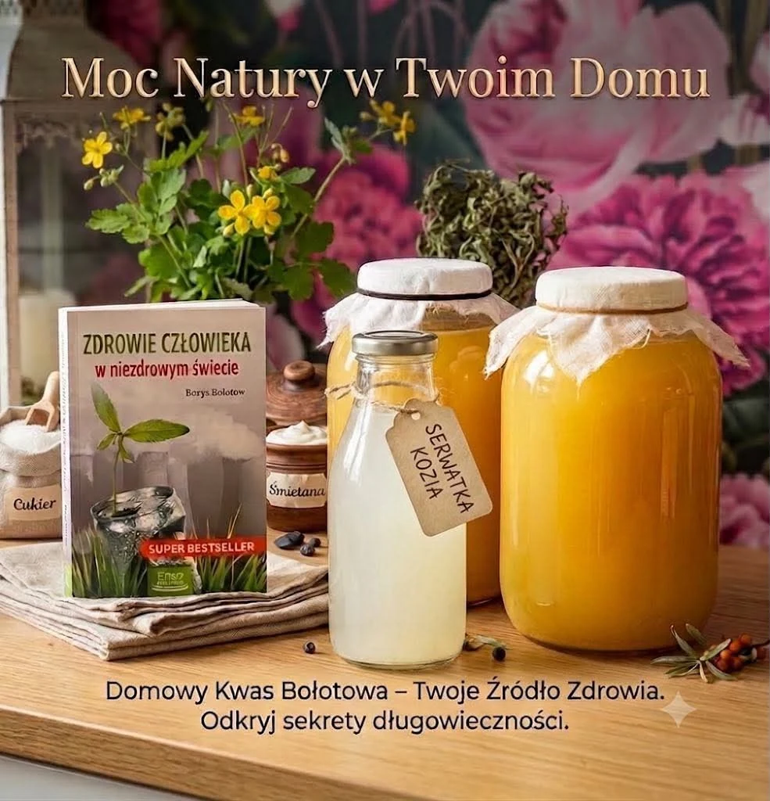
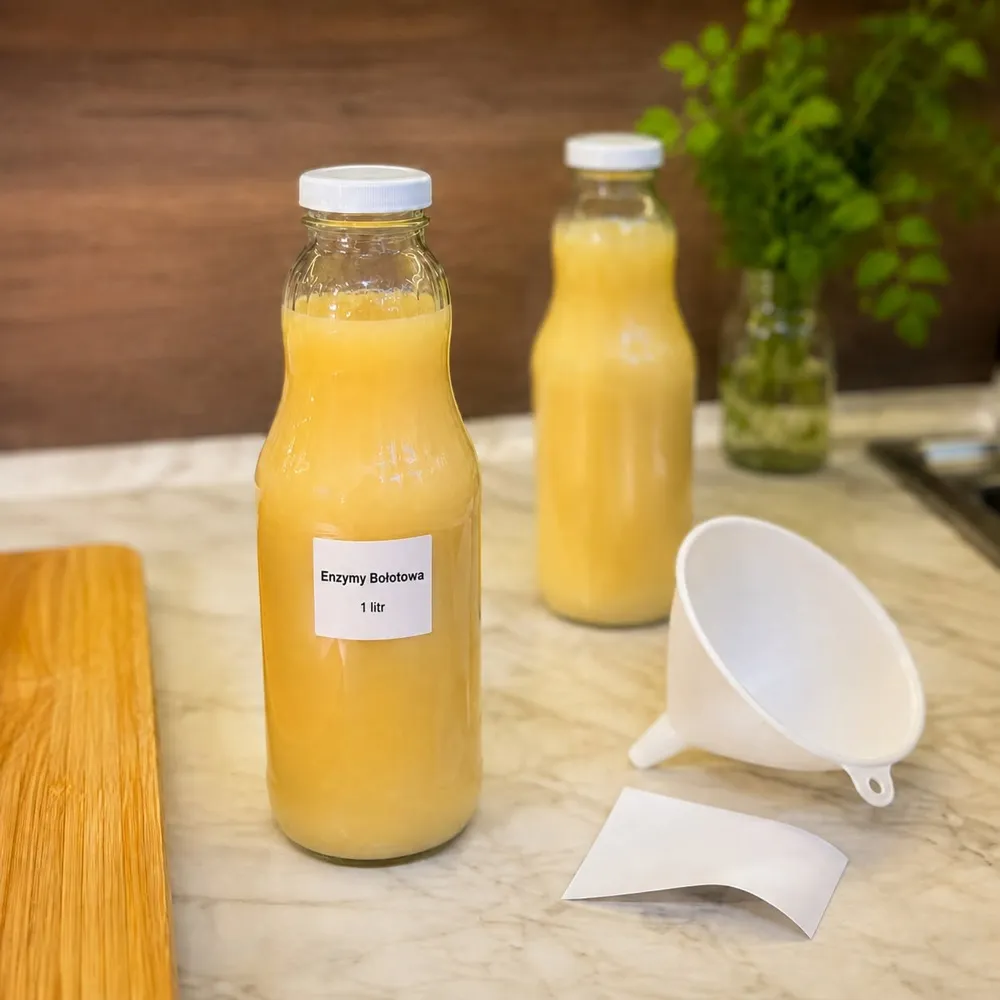
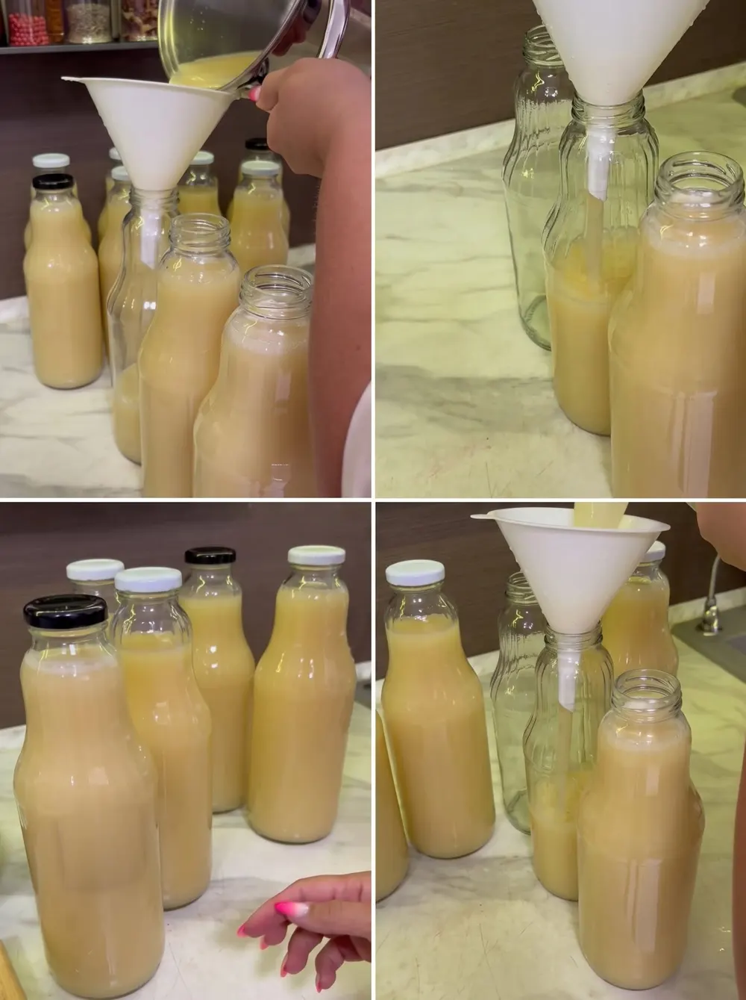

wyrób Pracowni
Tradycyjny zakwas Bołotowa na koziej serwatce i glistniku (jaskółczym zielu). Przygotowujemy go ręcznie, w małych partiach, a każda partia fermentuje około 14 dni.
Poniżej znajdziesz skład, cenę i przycisk zamówienia.

Zakwas Bołotowa, nazywany też Enzymami Bołotowa, kwasem Bołotowa albo zakwasem z glistnikiem, to tradycyjny ferment przygotowywany na bazie serwatki i glistnika, czyli jaskółczego ziela. Nazwa pochodzi od Borysa Bołotowa, który spopularyzował tę recepturę.

W Pracowni Natury EKO zakwas powstaje na koziej serwatce. Nastawiamy go ręcznie, w niewielkich partiach, i pozwalamy mu spokojnie fermentować przez około 14 dni. Skład jest prosty: serwatka kozia i glistnik.

Produkt do użytku zewnętrznego.
Zakwas sprzedajemy w butelkach o pojemności 1 litra. Wysyłamy paczkomatem lub kurierem InPost, a ceny dostawy znajdziesz w sekcji Wysyłka i odbiór. Gdy aktualna partia się wyczerpie, czas realizacji może wydłużyć się o kilka dni, bo nowa partia potrzebuje około 14 dni fermentacji.
Masz pytanie? Zadzwoń lub napisz: Agnieszka, +48 513 816 347, aga_bialk@int.pl.